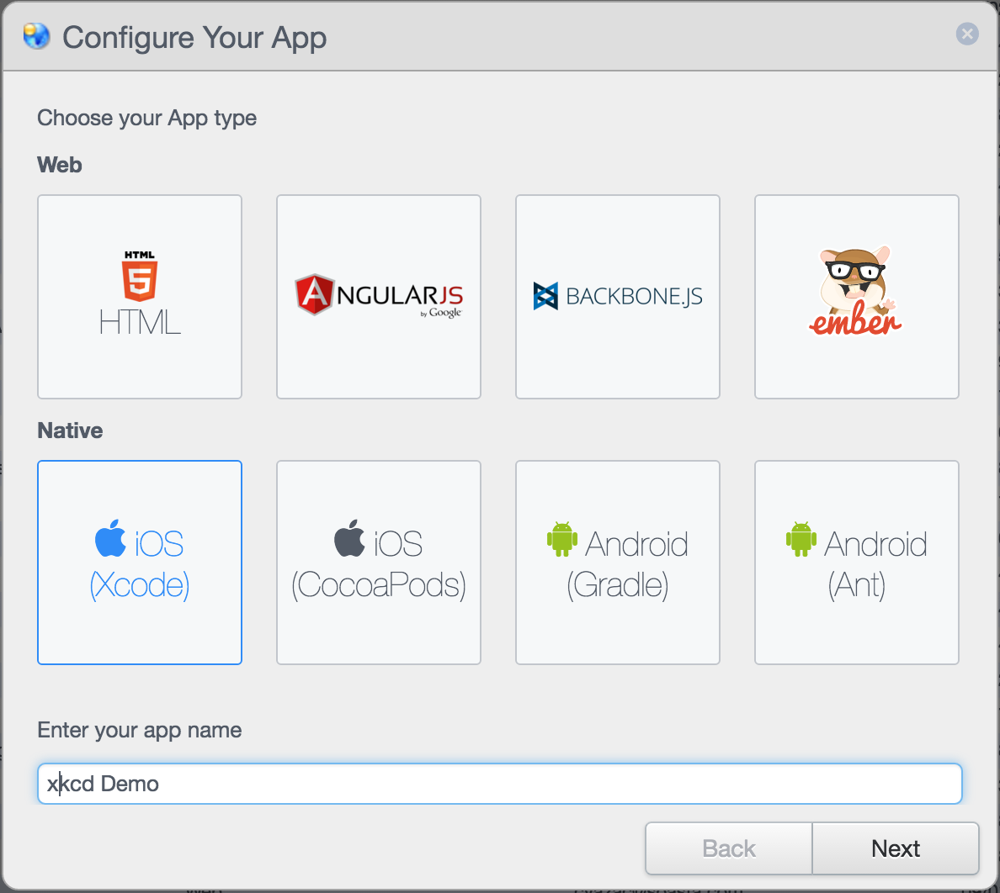
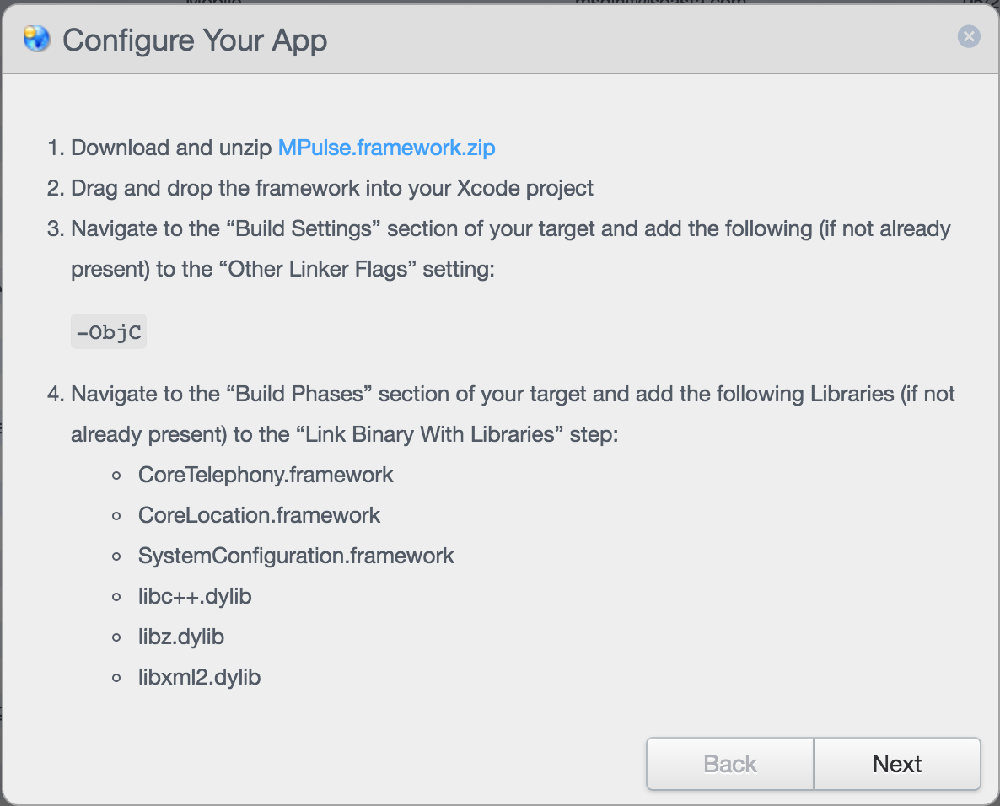
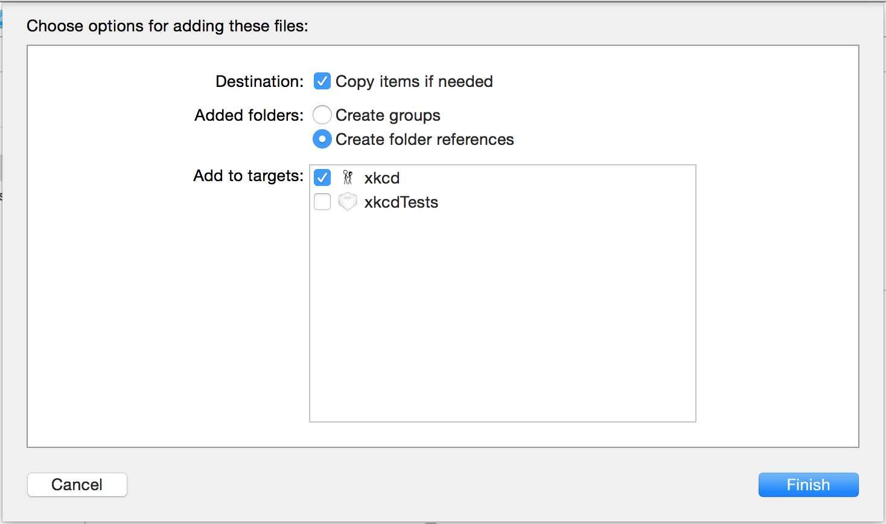
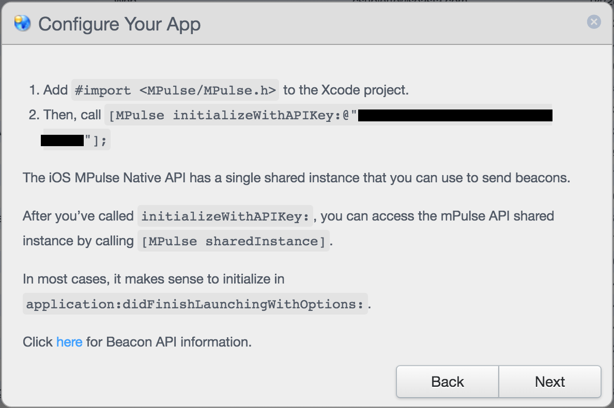
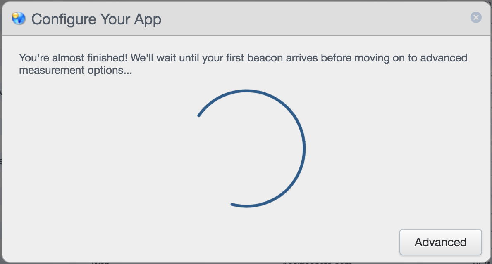
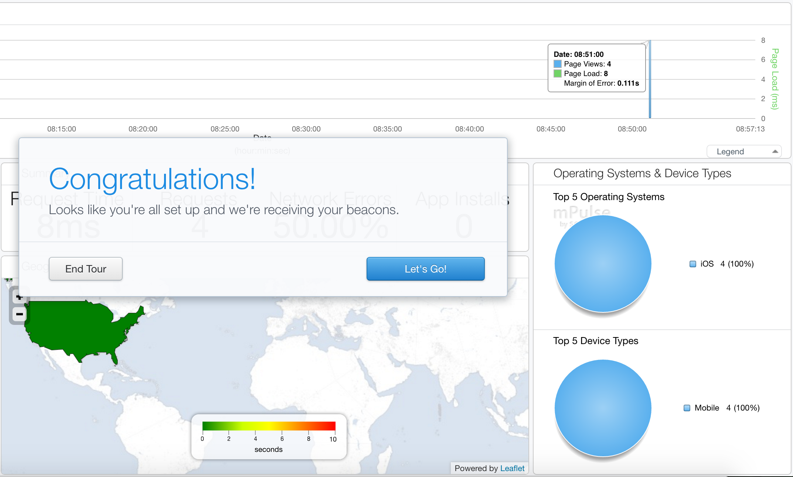

Introduction
This project is meant to be a fun way of demonstrating the capabilities of SOASTA mPulse for iOS apps. It's a fork of the excellent open-source app by Paul Rehkugler, and is not meant as a replacement of that version. This is for demo purposes only.
I repeat: if you're looking for a quality xkcd app, go to the original. If you want to learn about mPulse for iOS, however, then you've come to the right place!
Usage
This page is meant to serve two purposes:
- Introduce the reader to the capabilities of mPulse for iOS
- Guide developers, if interested, through the process of instrumenting an app
Pre-requisites
If you want to follow along, you'll need the following:
- An active SOASTA mPulse account. You can sign up for free - it only takes a minute, and no credit card is required!
- A copy of Xcode. I'm running Xcode 7.2.1 on OS X Yosemite. Please feel free to try other versions, and let me know how it goes!
- A Git client (any will do).
Cheat Sheet
You can see a full diff of all the changes we're going to make, in GitHub commit 74c6d60a9afcc9bd003bf46416dbb455a8a41141.
Getting the Source
Clone the source for this project, and then check out the un-instrumented branch. For example, if you're using the command line:
$ git clone https://github.com/msolnit/xkcd-with-mPulse.git
$ cd xkcd-with-mPulse
$ git checkout un-instrumentedThe un-instrumented branch is important, because it doesn't yet have any of the changes you'll be making below.
Finally, open xkcd.xcodeproj in Xcode.
mPulse Setup
When you log into mPulse for the very first time, you'll see the Configure Your App dialog below. If you've already created an app configuration, then you can click the "New" button in the toolbar to bring this dialog back:

Click the "iOS (Xcode)" option and then set the app name to "xkcd Demo" (as shown in the screen shot). Then click the Next button. You'll see the next step appear:

Click the "MPulse.Framework.zip" download link and wait for the file to finish downloading. While you're waiting, let's review the code changes you'll need to make:
- Add the framework (we'll do this in a second, but I'll assume for now that it's still downloading).
- For this project, you can skip the
-ObjClinker flag, because the app already has it. - The
CoreLocationandSystemConfigurationframeworks are already present. However, you'll need to addCoreTelephony,libc++,libz, andlibxml2. - When the download finishes, un-zip the
MPulse.Framework.zipfile, drag theMPulse.frameworkdirectory into your Xcode project and drop it. - In the confirmation dialog that appears, make sure to check the "Copy items if needed" box. Then click Finish.

At this point, you can click Next in the mPulse setup wizard. You'll see the following:

You'll need to make note of the API key, which is blacked out in the screen shot above. It will look something like 12345-12345-12345-12345-12345.
Because this is a Swift-based app, the first step (adding the #import statement) needs to be done in the "Objective-C bridging header" file (see Apple developer docs for more detail). Fortunately, this project already has a bridging file, so you don't need to create it. Just add the line to Classes/xkcd-Bridging-Header.h, line 8:
#import "Comic.h"
#import "ComicListViewController.h"
#import "TLNavigationController.h"
// NEW CODE HERE
#import <MPulse/MPulse.h>Initializing mPulse in Swift is a bit different from doing it in Objective-C. The idea is the same — you're adding a line to the app delegate class — but the syntax is different. Open the AppDelegate.swift file and jump to line 18:
func application(application: UIApplication, didFinishLaunchingWithOptions launchOptions: [NSObject : AnyObject]?) -> Bool {Just below this line, add the following:
MPulse.initializeWithAPIKey("INSERT API KEY HERE")and insert your own API key.
Finally, in the mPulse UI, click the Next button to advance to the final stage of the wizard.

At this point mPulse is simply waiting for data. Run your newly-instrumented app in Xcode (you can use the simulator or a real device), and wait for about a minute. The app will request the list of xkcd comics, and mPulse will automatically measure the request! You should see the Summary dashboard open with your data:

Why does it take a full minute for data to appear in the dashboard?
We batch the data that gets sent to mPulse, so that we don't take up too much of your users' bandwidth. By default, we send a batch every 60 seconds, but you can tweak this number in the mPulse app configuration.
Next Steps
The fully-instrumented example (the master branch in GitHub) also includes a custom timer and metric, to show how you can capture more than just basic network performance. The next update to this page will walk through those steps as well, but in the meantime, feel free to take a look at the code!